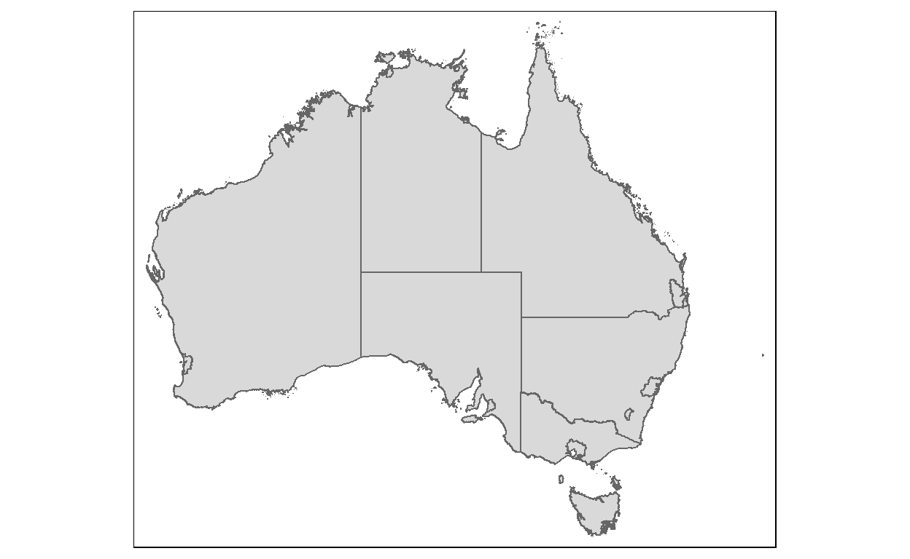
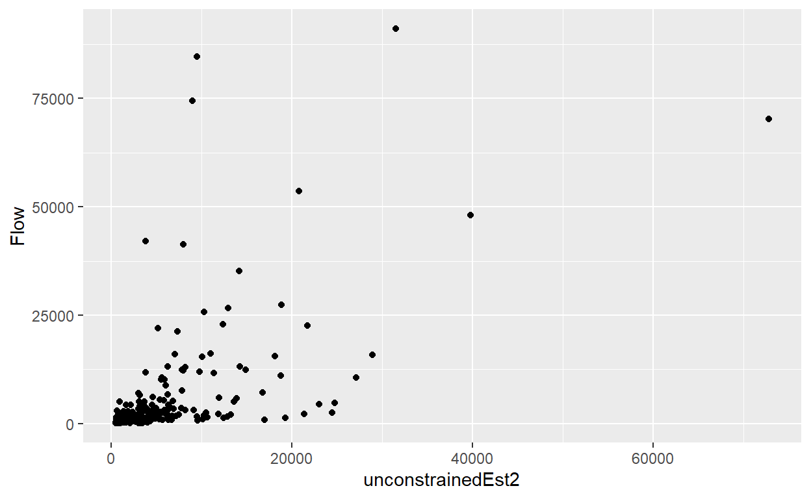
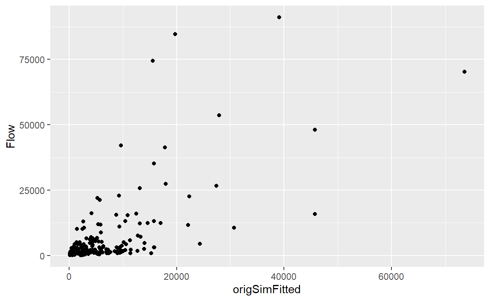
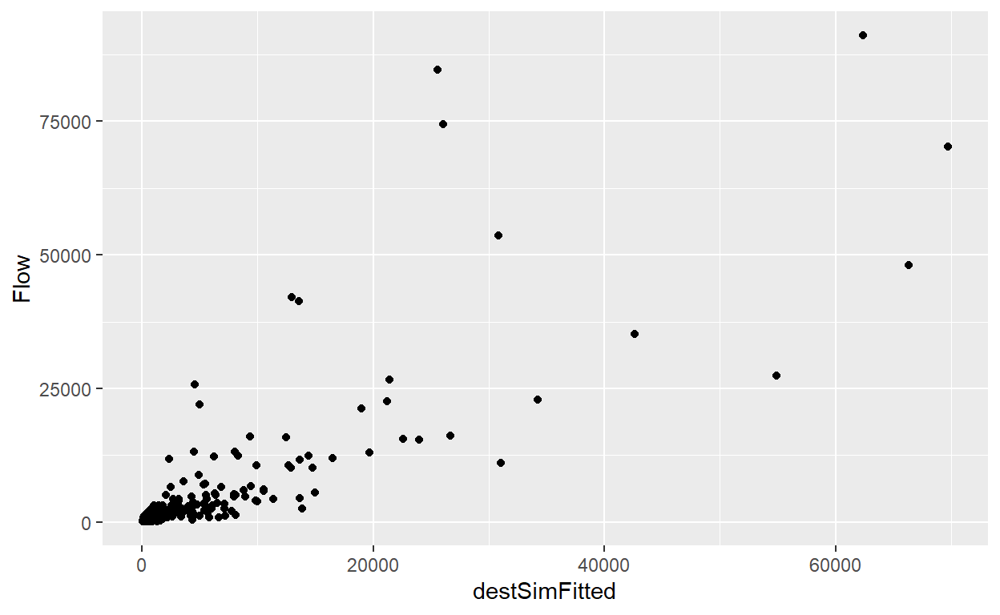
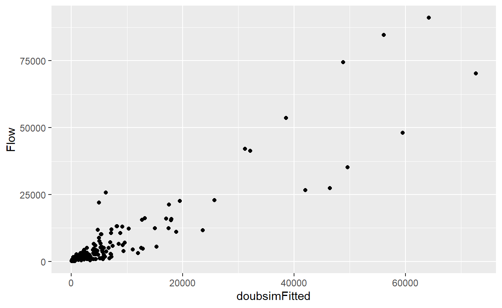

In this lesson, we will be learning about Spatial Interaction Models.
Before we getting started, it is important for us to install the necessary R packages and launch them into RStudio environment.
The R packages need for this exercise are as follows:
The code chunk below installs and launches these R packages into RStudio environment.
packages = c('tmap', 'tidyverse',
'sp', 'caret',
'geojsonio', 'reshape2',
'broom')
for(p in packages){
if(!require(p, character.only = T)){
install.packages(p)
}
library(p, character.only = T)
}
# library(devtools)
# install_version("sf", version = "0.9-8", repos = "http://cran.us.r-project.org")
# library(devtools)
# install_version("stplanr", version = "0.8.4", repos = "http://cran.us.r-project.org")
Aus <- geojson_read("https://www.dropbox.com/s/0fg80nzcxcsybii/GCCSA_2016_AUST_New.geojson?raw=1", what = "sp")
Ausdata <- Aus@data
AusSF <- st_as_sf(Aus) %>%
st_set_crs(4283)
st_is_valid(AusSF)
[1] TRUE FALSE TRUE TRUE TRUE TRUE TRUE TRUE TRUE TRUE TRUE
[12] FALSE TRUE TRUE TRUEst_make_valid(AusSF)
Simple feature collection with 15 features and 6 fields
Geometry type: MULTIPOLYGON
Dimension: XY
Bounding box: xmin: 112.9211 ymin: -43.74051 xmax: 159.1092 ymax: -9.142176
Geodetic CRS: GDA94
First 10 features:
GCCSA_CODE GCC_CODE16 GCCSA_NAME STATE_CODE
1 1RNSW 1RNSW Rest of NSW 1
2 1GSYD 1GSYD Greater Sydney 1
3 2GMEL 2GMEL Greater Melbourne 2
4 2RVIC 2RVIC Rest of Vic. 2
5 3RQLD 3RQLD Rest of Qld 3
6 3GBRI 3GBRI Greater Brisbane 3
7 4RSAU 4RSAU Rest of SA 4
8 4GADE 4GADE Greater Adelaide 4
9 5GPER 5GPER Greater Perth 5
10 5RWAU 5RWAU Rest of WA 5
STATE_NAME AREA_SQKM geometry
1 New South Wales 788442.589 MULTIPOLYGON (((159.0611 -3...
2 New South Wales 12368.193 MULTIPOLYGON (((151.266 -33...
3 Victoria 9992.512 MULTIPOLYGON (((144.9065 -3...
4 Victoria 217503.119 MULTIPOLYGON (((146.6858 -3...
5 Queensland 1714330.123 MULTIPOLYGON (((150.7377 -2...
6 Queensland 15841.960 MULTIPOLYGON (((153.3738 -2...
7 South Australia 981015.072 MULTIPOLYGON (((136.1844 -3...
8 South Australia 3259.836 MULTIPOLYGON (((138.5269 -3...
9 Western Australia 6416.222 MULTIPOLYGON (((115.7132 -3...
10 Western Australia 2520230.017 MULTIPOLYGON (((117.896 -35...st_is_valid(AusSF)
[1] TRUE FALSE TRUE TRUE TRUE TRUE TRUE TRUE TRUE TRUE TRUE
[12] FALSE TRUE TRUE TRUEPlot the boundary layer
tmap_options(check.and.fix = TRUE)
tmap_mode("plot")
qtm(AusSF)

head(AusSF, 10)
Simple feature collection with 10 features and 6 fields
Geometry type: MULTIPOLYGON
Dimension: XY
Bounding box: xmin: 112.9211 ymin: -39.15919 xmax: 159.1092 ymax: -9.142176
Geodetic CRS: GDA94
GCCSA_CODE GCC_CODE16 GCCSA_NAME STATE_CODE
1 1RNSW 1RNSW Rest of NSW 1
2 1GSYD 1GSYD Greater Sydney 1
3 2GMEL 2GMEL Greater Melbourne 2
4 2RVIC 2RVIC Rest of Vic. 2
5 3RQLD 3RQLD Rest of Qld 3
6 3GBRI 3GBRI Greater Brisbane 3
7 4RSAU 4RSAU Rest of SA 4
8 4GADE 4GADE Greater Adelaide 4
9 5GPER 5GPER Greater Perth 5
10 5RWAU 5RWAU Rest of WA 5
STATE_NAME AREA_SQKM geometry
1 New South Wales 788442.589 MULTIPOLYGON (((159.061 -31...
2 New South Wales 12368.193 MULTIPOLYGON (((151.2658 -3...
3 Victoria 9992.512 MULTIPOLYGON (((144.9063 -3...
4 Victoria 217503.119 MULTIPOLYGON (((146.6857 -3...
5 Queensland 1714330.123 MULTIPOLYGON (((150.7374 -2...
6 Queensland 15841.960 MULTIPOLYGON (((153.374 -27...
7 South Australia 981015.072 MULTIPOLYGON (((136.1839 -3...
8 South Australia 3259.836 MULTIPOLYGON (((138.5262 -3...
9 Western Australia 6416.222 MULTIPOLYGON (((115.7128 -3...
10 Western Australia 2520230.017 MULTIPOLYGON (((117.8946 -3...Aus <- as(AusSF, "Spatial")
AusProj <- spTransform(Aus,"+init=epsg:3112")
summary(AusProj)
Object of class SpatialPolygonsDataFrame
Coordinates:
min max
x -2083066 2346598
y -4973093 -1115948
Is projected: TRUE
proj4string :
[+proj=lcc +lat_0=0 +lon_0=134 +lat_1=-18 +lat_2=-36 +x_0=0
+y_0=0 +ellps=GRS80 +units=m +no_defs]
Data attributes:
GCCSA_CODE GCC_CODE16 GCCSA_NAME
Length:15 Length:15 Length:15
Class :character Class :character Class :character
Mode :character Mode :character Mode :character
STATE_CODE STATE_NAME AREA_SQKM
Length:15 Length:15 Min. : 1695
Class :character Class :character 1st Qu.: 4838
Mode :character Mode :character Median : 15842
Mean : 512525
3rd Qu.: 884729
Max. :2520230 dist <- spDists(AusProj)
dist
[,1] [,2] [,3] [,4] [,5] [,6]
[1,] 0.0 391437.9 644760.8 571477.3 1100378.3 750755.8
[2,] 391437.9 0.0 682745.0 685848.4 1386485.4 707908.1
[3,] 644760.8 682745.0 0.0 133469.9 1694648.9 1337408.0
[4,] 571477.3 685848.4 133469.9 0.0 1584991.5 1296766.5
[5,] 1100378.3 1386485.4 1694648.9 1584991.5 0.0 998492.1
[6,] 750755.8 707908.1 1337408.0 1296766.5 998492.1 0.0
[7,] 1082754.7 1462171.3 1212525.3 1081939.7 1192252.9 1655212.1
[8,] 819629.7 1112315.7 657875.7 541576.5 1477964.9 1550134.5
[9,] 2891531.5 3226086.3 2722337.4 2633416.1 2962834.0 3531418.0
[10,] 2490287.4 2870995.7 2542772.5 2424001.8 2239419.3 2993729.9
[11,] 1192833.0 1064848.2 603165.2 731624.1 2280386.7 1772756.1
[12,] 1096764.5 999758.0 489273.6 615173.0 2176139.6 1705581.2
[13,] 1945803.1 2323414.2 2323404.3 2190310.9 1183495.9 2143514.5
[14,] 2699307.7 3062979.3 3113837.0 2981210.5 1782227.9 2780660.8
[15,] 412697.8 256289.3 430815.8 452584.3 1505884.6 948547.6
[,7] [,8] [,9] [,10] [,11] [,12]
[1,] 1082754.7 819629.7 2891531.5 2490287.4 1192833.0 1096764.5
[2,] 1462171.3 1112315.7 3226086.3 2870995.7 1064848.2 999758.0
[3,] 1212525.3 657875.7 2722337.4 2542772.5 603165.2 489273.6
[4,] 1081939.7 541576.5 2633416.1 2424001.8 731624.1 615173.0
[5,] 1192252.9 1477964.9 2962834.0 2239419.3 2280386.7 2176139.6
[6,] 1655212.1 1550134.5 3531418.0 2993729.9 1772756.1 1705581.2
[7,] 0.0 602441.7 1879873.6 1408864.5 1765685.0 1644255.7
[8,] 602441.7 0.0 2120117.7 1884897.3 1170300.0 1049301.5
[9,] 1879873.6 2120117.7 0.0 963094.8 3030825.1 2933427.1
[10,] 1408864.5 1884897.3 963094.8 0.0 3007005.8 2891500.6
[11,] 1765685.0 1170300.0 3030825.1 3007005.8 0.0 121449.6
[12,] 1644255.7 1049301.5 2933427.1 2891500.6 121449.6 0.0
[13,] 1198930.8 1788551.3 2215369.4 1302498.1 2913873.5 2793570.5
[14,] 1991775.4 2584759.7 2648782.4 1686414.7 3707567.5 3587636.5
[15,] 1368380.0 936272.3 3055551.0 2766083.4 835822.4 759587.0
[,13] [,14] [,15]
[1,] 1945803 2699308 412697.8
[2,] 2323414 3062979 256289.3
[3,] 2323404 3113837 430815.8
[4,] 2190311 2981211 452584.3
[5,] 1183496 1782228 1505884.6
[6,] 2143514 2780661 948547.6
[7,] 1198931 1991775 1368380.0
[8,] 1788551 2584760 936272.3
[9,] 2215369 2648782 3055551.0
[10,] 1302498 1686415 2766083.4
[11,] 2913873 3707567 835822.4
[12,] 2793570 3587637 759587.0
[13,] 0 796710 2337203.6
[14,] 796710 0 3101576.8
[15,] 2337204 3101577 0.0distPair <- melt(dist)
head(distPair, 10)
Var1 Var2 value
1 1 1 0.0
2 2 1 391437.9
3 3 1 644760.8
4 4 1 571477.3
5 5 1 1100378.3
6 6 1 750755.8
7 7 1 1082754.7
8 8 1 819629.7
9 9 1 2891531.5
10 10 1 2490287.4distPair$value <- distPair$value / 1000
head(distPair, 10)
Var1 Var2 value
1 1 1 0.0000
2 2 1 391.4379
3 3 1 644.7608
4 4 1 571.4773
5 5 1 1100.3783
6 6 1 750.7558
7 7 1 1082.7547
8 8 1 819.6297
9 9 1 2891.5315
10 10 1 2490.2874distPair <- melt(dist)
head(distPair, 10)
Var1 Var2 value
1 1 1 0.0
2 2 1 391437.9
3 3 1 644760.8
4 4 1 571477.3
5 5 1 1100378.3
6 6 1 750755.8
7 7 1 1082754.7
8 8 1 819629.7
9 9 1 2891531.5
10 10 1 2490287.4distPair$value <- distPair$value / 1000
head(distPair, 10)
Var1 Var2 value
1 1 1 0.0000
2 2 1 391.4379
3 3 1 644.7608
4 4 1 571.4773
5 5 1 1100.3783
6 6 1 750.7558
7 7 1 1082.7547
8 8 1 819.6297
9 9 1 2891.5315
10 10 1 2490.2874Importing in the migration data into rstudio
mdata <- read_csv("https://www.dropbox.com/s/wi3zxlq5pff1yda/AusMig2011.csv?raw=1",col_names = TRUE)
glimpse(mdata)
Rows: 225
Columns: 13
$ Origin <chr> "Greater Sydney", "Greater Sydney", "Greater~
$ Orig_code <chr> "1GSYD", "1GSYD", "1GSYD", "1GSYD", "1GSYD",~
$ Destination <chr> "Greater Sydney", "Rest of NSW", "Greater Me~
$ Dest_code <chr> "1GSYD", "1RNSW", "2GMEL", "2RVIC", "3GBRI",~
$ Flow <dbl> 3395015, 91031, 22601, 4416, 22888, 27445, 5~
$ vi1_origpop <dbl> 4391673, 4391673, 4391673, 4391673, 4391673,~
$ wj1_destpop <dbl> 4391673, 2512952, 3999981, 1345717, 2065998,~
$ vi2_origunemp <dbl> 5.74, 5.74, 5.74, 5.74, 5.74, 5.74, 5.74, 5.~
$ wj2_destunemp <dbl> 5.74, 6.12, 5.47, 5.17, 5.86, 6.22, 5.78, 5.~
$ vi3_origmedinc <dbl> 780.64, 780.64, 780.64, 780.64, 780.64, 780.~
$ wj3_destmedinc <dbl> 780.64, 509.97, 407.95, 506.58, 767.08, 446.~
$ vi4_origpctrent <dbl> 31.77, 31.77, 31.77, 31.77, 31.77, 31.77, 31~
$ wj4_destpctrent <dbl> 31.77, 27.20, 27.34, 24.08, 33.19, 32.57, 28~Ordering the spatial data by code order.
mdata$dist <- distPair$value
Setting intr-zonal distance to be near 0 and not exactly 0
mdata$dist <- ifelse(mdata$dist == 0,5,mdata$dist)
glimpse(mdata)
Rows: 225
Columns: 16
$ Origin <chr> "Greater Sydney", "Greater Sydney", "Greater~
$ Orig_code <chr> "1GSYD", "1GSYD", "1GSYD", "1GSYD", "1GSYD",~
$ Destination <chr> "Greater Sydney", "Rest of NSW", "Greater Me~
$ Dest_code <chr> "1GSYD", "1RNSW", "2GMEL", "2RVIC", "3GBRI",~
$ Flow <dbl> 3395015, 91031, 22601, 4416, 22888, 27445, 5~
$ vi1_origpop <dbl> 4391673, 4391673, 4391673, 4391673, 4391673,~
$ wj1_destpop <dbl> 4391673, 2512952, 3999981, 1345717, 2065998,~
$ vi2_origunemp <dbl> 5.74, 5.74, 5.74, 5.74, 5.74, 5.74, 5.74, 5.~
$ wj2_destunemp <dbl> 5.74, 6.12, 5.47, 5.17, 5.86, 6.22, 5.78, 5.~
$ vi3_origmedinc <dbl> 780.64, 780.64, 780.64, 780.64, 780.64, 780.~
$ wj3_destmedinc <dbl> 780.64, 509.97, 407.95, 506.58, 767.08, 446.~
$ vi4_origpctrent <dbl> 31.77, 31.77, 31.77, 31.77, 31.77, 31.77, 31~
$ wj4_destpctrent <dbl> 31.77, 27.20, 27.34, 24.08, 33.19, 32.57, 28~
$ FlowNoIntra <dbl> 0, 91031, 22601, 4416, 22888, 27445, 5817, 7~
$ offset <dbl> 1e-10, 1e+00, 1e+00, 1e+00, 1e+00, 1e+00, 1e~
$ dist <dbl> 5.0000, 391.4379, 644.7608, 571.4773, 1100.3~We will not plot the intra-zonal flows. The code chunk below will be used to remove intra-zonal flows.
mdatasub <- mdata[mdata$Orig_code!=mdata$Dest_code,]
Removing all exceprt origin, dest and flow cols
Converting to WGS84 projection
travel_networkwgs <- spTransform(travel_network,"+init=epsg:4326" )
Same for Aus layer
AusWGS <- spTransform(Aus,"+init=epsg:4326" )
Setting a more meaningful value for line widths
w <- mdatasub_skinny$Flow / max(mdatasub_skinny$Flow) * 10
Plotting the interaction line onto a map
uncosim <- glm(Flow ~ log(vi1_origpop)+log(wj3_destmedinc)+log(dist), na.action = na.exclude, family = poisson(link = "log"), data = mdatasub)
summary(uncosim)
Call:
glm(formula = Flow ~ log(vi1_origpop) + log(wj3_destmedinc) +
log(dist), family = poisson(link = "log"), data = mdatasub,
na.action = na.exclude)
Deviance Residuals:
Min 1Q Median 3Q Max
-179.76 -57.41 -22.85 9.83 468.92
Coefficients:
Estimate Std. Error z value Pr(>|z|)
(Intercept) 7.4435365 0.0248322 299.75 <2e-16 ***
log(vi1_origpop) 0.5928768 0.0009145 648.28 <2e-16 ***
log(wj3_destmedinc) -0.1933096 0.0033602 -57.53 <2e-16 ***
log(dist) -0.8290204 0.0010152 -816.62 <2e-16 ***
---
Signif. codes: 0 '***' 0.001 '**' 0.01 '*' 0.05 '.' 0.1 ' ' 1
(Dispersion parameter for poisson family taken to be 1)
Null deviance: 2750417 on 209 degrees of freedom
Residual deviance: 1478832 on 206 degrees of freedom
AIC: 1480839
Number of Fisher Scoring iterations: 5mdatasub$fitted <- fitted(uncosim)
k <- uncosim$coefficients[1]
mu <- uncosim$coefficients[2]
alpha <- uncosim$coefficients[3]
beta <- -uncosim$coefficients[4]
[1] 1313514mdatasubmat2 <- dcast(mdatasub, Orig_code ~ Dest_code, sum, value.var = "unconstrainedEst2", margins=c("Orig_code", "Dest_code"))
mdatasubmat2
Orig_code 1GSYD 1RNSW 2GMEL 2RVIC 3GBRI 3RQLD 4GADE 4RSAU 5GPER
1 1GSYD 0 31491 21739 23041 12353 18831 13906 16984 5598
2 1RNSW 20830 0 14890 14226 7325 14200 7786 9470 3671
3 2GMEL 18143 18786 0 72790 8171 11039 11978 19281 5567
4 2RVIC 10511 9811 39789 0 4527 5937 6901 11876 3000
5 3GBRI 7873 7058 6240 6325 0 9507 8210 6662 3508
6 3RQLD 11381 12974 7994 7865 9015 0 6586 6743 3193
7 4GADE 5854 4955 6042 6368 5423 4587 0 10284 3753
8 4RSAU 3615 3048 4918 5542 2225 2375 5201 0 1665
9 5GPER 3180 3153 3790 3736 3127 3002 5065 4445 0
10 5RWAU 1730 1670 1928 1924 1896 1655 3092 2355 3852
11 6GHOB 1907 2275 3806 3110 1118 1530 1536 2094 892
12 6RTAS 2427 2845 5372 4261 1380 1875 1933 2720 1087
13 7GDAR 911 854 891 898 1380 936 1516 1055 828
14 7RNTE 581 568 585 582 823 632 834 651 598
15 8ACTE 6264 10096 6853 6309 2149 3501 2585 3433 1207
16 (all) 95207 109584 124837 156977 60912 79607 77129 98053 38419
5RWAU 6GHOB 6RTAS 7GDAR 7RNTE 8ACTE (all)
1 6290 12848 13255 7463 6323 27114 217236
2 4015 10138 10279 4627 4089 28906 154452
3 5849 21394 24487 6095 5314 24756 253650
4 3190 9556 10617 3355 2888 12458 134416
5 4393 4801 4803 7207 5704 5929 88220
6 3636 6229 6189 4637 4154 9158 99754
7 4732 4354 4445 5230 3816 4709 74552
8 1823 3003 3163 1841 1508 3163 43090
9 7956 3412 3374 3856 3695 2967 54758
10 0 1651 1641 2879 2583 1549 30405
11 891 0 13610 884 805 2502 36960
12 1092 16785 0 1087 982 3214 47060
13 1277 727 725 0 2063 764 14825
14 863 499 493 1554 0 506 9769
15 1301 3894 4056 1447 1272 0 54367
16 47308 99291 101137 52162 45196 127695 1313514Compare with original matrix
mdatasubmat <- dcast(mdatasub, Orig_code ~ Dest_code, sum, value.var = "Flow", margins=c("Orig_code", "Dest_code"))
mdatasubmat
Orig_code 1GSYD 1RNSW 2GMEL 2RVIC 3GBRI 3RQLD 4GADE 4RSAU
1 1GSYD 0 91031 22601 4416 22888 27445 5817 795
2 1RNSW 53562 0 12407 13084 21300 35189 3617 1591
3 2GMEL 15560 11095 0 70260 13057 16156 6021 1300
4 2RVIC 2527 11967 48004 0 4333 10102 3461 2212
5 3GBRI 12343 16061 13078 4247 0 84649 3052 820
6 3RQLD 11634 26701 12284 7573 74410 0 3774 1751
7 4GADE 5421 3518 8810 3186 5447 6173 0 25677
8 4RSAU 477 1491 1149 2441 820 2633 22015 0
9 5GPER 6516 4066 11729 2929 5081 7006 2631 867
10 5RWAU 714 2242 1490 1813 1137 4328 807 982
11 6GHOB 1224 1000 3016 622 1307 1804 533 106
12 6RTAS 1024 1866 2639 1636 1543 2883 651 342
13 7GDAR 1238 2178 1953 1480 2769 5108 2105 641
14 7RNTE 406 1432 700 792 896 3018 1296 961
15 8ACTE 6662 15399 5229 1204 4331 3954 1359 134
16 (all) 119308 190047 145089 115683 159319 210448 57139 38179
5GPER 5RWAU 6GHOB 6RTAS 7GDAR 7RNTE 8ACTE (all)
1 10574 2128 1644 1996 1985 832 10670 204822
2 4990 3300 970 1882 2248 1439 15779 171358
3 10116 2574 2135 2555 2023 996 4724 158572
4 3459 2601 672 1424 1547 717 1353 94379
5 4812 1798 1386 2306 1812 909 3134 150407
6 6588 4690 1499 3089 3127 2140 3115 162375
7 3829 1228 602 872 1851 921 1993 69528
8 1052 1350 142 430 681 488 183 35352
9 0 41320 1018 1805 1300 413 1666 88347
10 42146 0 277 1163 1090 623 256 59068
11 899 363 0 5025 190 115 565 16769
12 1210 1032 7215 0 268 170 292 22771
13 2152 954 243 335 0 1996 832 23984
14 699 826 96 213 2684 0 229 14248
15 1514 285 369 270 617 211 0 41538
16 94040 64449 18268 23365 21423 11970 44791 1313518ggplot(data=mdatasub,
aes(y = `Flow`,
x = `unconstrainedEst2`))+
geom_point(color="black", fill="light blue")

postResample(mdatasub$Flow,mdatasub$unconstrainedEst2)
RMSE Rsquared MAE
1.065704e+04 3.409197e-01 4.998295e+03 origSim <- glm(Flow ~ Orig_code+log(wj3_destmedinc)+log(dist)-1, na.action = na.exclude, family = poisson(link = "log"), data = mdatasub)
#let's have a look at it's summary...
summary(origSim)
Call:
glm(formula = Flow ~ Orig_code + log(wj3_destmedinc) + log(dist) -
1, family = poisson(link = "log"), data = mdatasub, na.action = na.exclude)
Deviance Residuals:
Min 1Q Median 3Q Max
-162.41 -56.28 -11.64 22.37 341.67
Coefficients:
Estimate Std. Error z value Pr(>|z|)
Orig_code1GSYD 20.105260 0.023522 854.75 <2e-16 ***
Orig_code1RNSW 19.903333 0.023851 834.50 <2e-16 ***
Orig_code2GMEL 19.377297 0.023140 837.39 <2e-16 ***
Orig_code2RVIC 18.833177 0.022898 822.48 <2e-16 ***
Orig_code3GBRI 20.558867 0.024089 853.44 <2e-16 ***
Orig_code3RQLD 20.495750 0.024127 849.49 <2e-16 ***
Orig_code4GADE 19.566081 0.024246 806.97 <2e-16 ***
Orig_code4RSAU 18.603648 0.024132 770.92 <2e-16 ***
Orig_code5GPER 20.580619 0.024575 837.45 <2e-16 ***
Orig_code5RWAU 19.960220 0.024588 811.78 <2e-16 ***
Orig_code6GHOB 17.296706 0.024162 715.88 <2e-16 ***
Orig_code6RTAS 17.502513 0.023457 746.14 <2e-16 ***
Orig_code7GDAR 18.854664 0.024855 758.60 <2e-16 ***
Orig_code7RNTE 18.694422 0.025925 721.11 <2e-16 ***
Orig_code8ACTE 18.295418 0.023626 774.39 <2e-16 ***
log(wj3_destmedinc) -0.320853 0.003376 -95.03 <2e-16 ***
log(dist) -1.261386 0.001419 -889.18 <2e-16 ***
---
Signif. codes: 0 '***' 0.001 '**' 0.01 '*' 0.05 '.' 0.1 ' ' 1
(Dispersion parameter for poisson family taken to be 1)
Null deviance: 23087017 on 210 degrees of freedom
Residual deviance: 1174697 on 193 degrees of freedom
AIC: 1176731
Number of Fisher Scoring iterations: 6create pivot table to turn paired list into matrix.
mdatasubmat3 <- dcast(mdatasub, Orig_code ~ Dest_code, sum, value.var = "origSimFitted", margins=c("Orig_code", "Dest_code"))
mdatasubmat3
Orig_code 1GSYD 1RNSW 2GMEL 2RVIC 3GBRI 3RQLD 4GADE 4RSAU
1 1GSYD 0 39132 22400 24332 9320 17959 11324 15284
2 1RNSW 27894 0 17029 15796 5690 15805 6335 8497
3 2GMEL 8783 9368 0 73575 2611 4186 4741 9739
4 2RVIC 5935 5406 45771 0 1648 2526 3176 7224
5 3GBRI 14588 12494 10420 10576 0 19728 15784 11436
6 3RQLD 22183 27387 13187 12790 15569 0 9797 10110
7 4GADE 5517 4329 5890 6344 4913 3864 0 13144
8 4RSAU 2994 2335 4865 5801 1431 1603 5285 0
9 5GPER 4407 4401 5857 5697 4298 4098 9083 7414
10 5RWAU 2861 2741 3432 3401 3290 2714 7027 4624
11 6GHOB 505 668 1469 1074 224 366 368 588
12 6RTAS 689 888 2350 1642 292 473 495 829
13 7GDAR 1293 1185 1273 1279 2435 1369 2851 1636
14 7RNTE 729 713 750 739 1238 840 1280 876
15 8ACTE 5227 10928 6097 5345 1027 2189 1380 2115
16 (all) 103605 121975 140790 168391 53986 77720 78926 93516
5GPER 5RWAU 6GHOB 6RTAS 7GDAR 7RNTE 8ACTE (all)
1 2798 3339 10041 10472 4310 3398 30712 204821
2 1992 2280 9468 9618 2816 2368 45771 171359
3 1458 1570 11460 13998 1664 1370 14048 158571
4 882 968 5213 6086 1040 840 7661 94376
5 4271 6008 6979 6945 12702 9030 9445 150406
6 3214 3911 9002 8866 5637 4837 15885 162375
7 2810 3995 3571 3665 4630 2908 3949 69529
8 922 1057 2291 2467 1068 800 2434 35353
9 0 17802 4982 4870 5887 5599 3954 88349
10 9687 0 2706 2667 6186 5321 2411 59068
11 159 159 0 10135 156 137 760 16768
12 204 205 13272 0 202 176 1054 22771
13 1121 2165 932 922 0 4536 987 23984
14 762 1332 586 573 3243 0 588 14249
15 427 479 2574 2724 560 467 0 41539
16 30707 45270 83077 84008 50101 41787 139659 1313518mdatasubmat
Orig_code 1GSYD 1RNSW 2GMEL 2RVIC 3GBRI 3RQLD 4GADE 4RSAU
1 1GSYD 0 91031 22601 4416 22888 27445 5817 795
2 1RNSW 53562 0 12407 13084 21300 35189 3617 1591
3 2GMEL 15560 11095 0 70260 13057 16156 6021 1300
4 2RVIC 2527 11967 48004 0 4333 10102 3461 2212
5 3GBRI 12343 16061 13078 4247 0 84649 3052 820
6 3RQLD 11634 26701 12284 7573 74410 0 3774 1751
7 4GADE 5421 3518 8810 3186 5447 6173 0 25677
8 4RSAU 477 1491 1149 2441 820 2633 22015 0
9 5GPER 6516 4066 11729 2929 5081 7006 2631 867
10 5RWAU 714 2242 1490 1813 1137 4328 807 982
11 6GHOB 1224 1000 3016 622 1307 1804 533 106
12 6RTAS 1024 1866 2639 1636 1543 2883 651 342
13 7GDAR 1238 2178 1953 1480 2769 5108 2105 641
14 7RNTE 406 1432 700 792 896 3018 1296 961
15 8ACTE 6662 15399 5229 1204 4331 3954 1359 134
16 (all) 119308 190047 145089 115683 159319 210448 57139 38179
5GPER 5RWAU 6GHOB 6RTAS 7GDAR 7RNTE 8ACTE (all)
1 10574 2128 1644 1996 1985 832 10670 204822
2 4990 3300 970 1882 2248 1439 15779 171358
3 10116 2574 2135 2555 2023 996 4724 158572
4 3459 2601 672 1424 1547 717 1353 94379
5 4812 1798 1386 2306 1812 909 3134 150407
6 6588 4690 1499 3089 3127 2140 3115 162375
7 3829 1228 602 872 1851 921 1993 69528
8 1052 1350 142 430 681 488 183 35352
9 0 41320 1018 1805 1300 413 1666 88347
10 42146 0 277 1163 1090 623 256 59068
11 899 363 0 5025 190 115 565 16769
12 1210 1032 7215 0 268 170 292 22771
13 2152 954 243 335 0 1996 832 23984
14 699 826 96 213 2684 0 229 14248
15 1514 285 369 270 617 211 0 41538
16 94040 64449 18268 23365 21423 11970 44791 1313518ggplot(data=mdatasub,
aes(y = `Flow`,
x = `origSimFitted`))+
geom_point(color="black", fill="light blue")

postResample(mdatasub$Flow,mdatasub$origSimFitted)
RMSE Rsquared MAE
9552.4663482 0.4713914 4676.7428571 destSim <- glm(Flow ~ Dest_code+log(vi1_origpop)+log(dist)-1, na.action = na.exclude, family = poisson(link = "log"), data = mdatasub)
summary(destSim)
Call:
glm(formula = Flow ~ Dest_code + log(vi1_origpop) + log(dist) -
1, family = poisson(link = "log"), data = mdatasub, na.action = na.exclude)
Deviance Residuals:
Min 1Q Median 3Q Max
-130.75 -32.60 -11.98 15.44 290.68
Coefficients:
Estimate Std. Error z value Pr(>|z|)
Dest_code1GSYD 8.7549173 0.0175475 498.9 <2e-16 ***
Dest_code1RNSW 9.1380848 0.0174815 522.7 <2e-16 ***
Dest_code2GMEL 8.6365848 0.0167940 514.3 <2e-16 ***
Dest_code2RVIC 8.0585586 0.0171615 469.6 <2e-16 ***
Dest_code3GBRI 9.7335278 0.0182676 532.8 <2e-16 ***
Dest_code3RQLD 9.7635251 0.0180565 540.7 <2e-16 ***
Dest_code4GADE 8.5386778 0.0184097 463.8 <2e-16 ***
Dest_code4RSAU 7.7538776 0.0184265 420.8 <2e-16 ***
Dest_code5GPER 9.8566397 0.0187450 525.8 <2e-16 ***
Dest_code5RWAU 9.1928390 0.0187449 490.4 <2e-16 ***
Dest_code6GHOB 6.9255789 0.0184232 375.9 <2e-16 ***
Dest_code6RTAS 7.1075262 0.0181525 391.5 <2e-16 ***
Dest_code7GDAR 7.9276108 0.0194661 407.3 <2e-16 ***
Dest_code7RNTE 7.6923550 0.0206243 373.0 <2e-16 ***
Dest_code8ACTE 7.3576260 0.0179247 410.5 <2e-16 ***
log(vi1_origpop) 0.5758189 0.0009403 612.4 <2e-16 ***
log(dist) -1.1565323 0.0014962 -773.0 <2e-16 ***
---
Signif. codes: 0 '***' 0.001 '**' 0.01 '*' 0.05 '.' 0.1 ' ' 1
(Dispersion parameter for poisson family taken to be 1)
Null deviance: 23087017 on 210 degrees of freedom
Residual deviance: 670267 on 193 degrees of freedom
AIC: 672300
Number of Fisher Scoring iterations: 6mdatasubmat6 <- dcast(mdatasub, Orig_code ~ Dest_code, sum, value.var = "destSimFitted", margins=c("Orig_code", "Dest_code"))
mdatasubmat6
Orig_code 1GSYD 1RNSW 2GMEL 2RVIC 3GBRI 3RQLD 4GADE 4RSAU
1 1GSYD 0 62384 21214 13683 34240 54902 10561 6649
2 1RNSW 30836 0 14396 8034 19004 42609 5410 3387
3 2GMEL 22628 31067 0 69711 19691 26681 8780 8124
4 2RVIC 13894 16504 66361 0 11362 14767 5350 5433
5 3GBRI 8336 9360 4494 2724 0 25573 6120 2178
6 3RQLD 13637 21412 6213 3612 26091 0 4403 2167
7 4GADE 6286 6515 4899 3136 14963 10550 0 4551
8 4RSAU 4341 4474 4973 3494 5841 5696 4993 0
9 5GPER 2461 3181 2344 1367 6366 5355 3262 1295
10 5RWAU 1436 1787 1245 738 4321 3182 2236 728
11 6GHOB 2045 3420 3997 1794 2571 3545 1046 768
12 6RTAS 2661 4345 6013 2588 3205 4378 1342 1029
13 7GDAR 840 1003 608 365 3971 2059 1184 340
14 7RNTE 484 613 365 215 2081 1282 554 187
15 8ACTE 9423 23982 7966 4221 5611 9868 1898 1343
16 (all) 119308 190047 145088 115682 159318 210447 57139 38179
5GPER 5RWAU 6GHOB 6RTAS 7GDAR 7RNTE 8ACTE (all)
1 12669 7753 1882 2487 2910 1575 9892 242801
2 8093 4769 1556 2007 1719 987 12444 155251
3 12872 7172 3923 5995 2246 1265 8919 229074
4 7143 4048 1676 2457 1284 711 4499 155489
5 7978 5678 576 729 3350 1649 1434 80179
6 6847 4267 810 1017 1772 1037 2573 95858
7 9994 7184 573 747 2443 1073 1186 74100
8 4352 2568 462 628 770 397 920 43909
9 0 13599 374 466 1464 941 571 43046
10 12967 0 185 233 1329 779 314 31480
11 2093 1087 0 5529 318 190 763 29166
12 2567 1344 5443 0 395 234 1006 36550
13 2175 2070 85 106 0 815 168 15789
14 1489 1292 54 67 868 0 102 9653
15 2800 1617 669 896 555 316 0 71165
16 94039 64448 18268 23364 21423 11969 44791 1313510mdatasubmat
Orig_code 1GSYD 1RNSW 2GMEL 2RVIC 3GBRI 3RQLD 4GADE 4RSAU
1 1GSYD 0 91031 22601 4416 22888 27445 5817 795
2 1RNSW 53562 0 12407 13084 21300 35189 3617 1591
3 2GMEL 15560 11095 0 70260 13057 16156 6021 1300
4 2RVIC 2527 11967 48004 0 4333 10102 3461 2212
5 3GBRI 12343 16061 13078 4247 0 84649 3052 820
6 3RQLD 11634 26701 12284 7573 74410 0 3774 1751
7 4GADE 5421 3518 8810 3186 5447 6173 0 25677
8 4RSAU 477 1491 1149 2441 820 2633 22015 0
9 5GPER 6516 4066 11729 2929 5081 7006 2631 867
10 5RWAU 714 2242 1490 1813 1137 4328 807 982
11 6GHOB 1224 1000 3016 622 1307 1804 533 106
12 6RTAS 1024 1866 2639 1636 1543 2883 651 342
13 7GDAR 1238 2178 1953 1480 2769 5108 2105 641
14 7RNTE 406 1432 700 792 896 3018 1296 961
15 8ACTE 6662 15399 5229 1204 4331 3954 1359 134
16 (all) 119308 190047 145089 115683 159319 210448 57139 38179
5GPER 5RWAU 6GHOB 6RTAS 7GDAR 7RNTE 8ACTE (all)
1 10574 2128 1644 1996 1985 832 10670 204822
2 4990 3300 970 1882 2248 1439 15779 171358
3 10116 2574 2135 2555 2023 996 4724 158572
4 3459 2601 672 1424 1547 717 1353 94379
5 4812 1798 1386 2306 1812 909 3134 150407
6 6588 4690 1499 3089 3127 2140 3115 162375
7 3829 1228 602 872 1851 921 1993 69528
8 1052 1350 142 430 681 488 183 35352
9 0 41320 1018 1805 1300 413 1666 88347
10 42146 0 277 1163 1090 623 256 59068
11 899 363 0 5025 190 115 565 16769
12 1210 1032 7215 0 268 170 292 22771
13 2152 954 243 335 0 1996 832 23984
14 699 826 96 213 2684 0 229 14248
15 1514 285 369 270 617 211 0 41538
16 94040 64449 18268 23365 21423 11970 44791 1313518ggplot(data=mdatasub,
aes(y = `Flow`,
x = `destSimFitted`))+
geom_point(color="black", fill="light blue")

Test the Goodness-of-Fit in exactly the same way as before:
postResample(mdatasub$Flow,mdatasub$destSimFitted)
RMSE Rsquared MAE
7851.9808377 0.6422222 3468.3238095 Calibrate a Doubly Constrained Spatial Interaction Model by using glm()
doubSim <- glm(Flow ~ Orig_code+Dest_code+log(dist), na.action = na.exclude, family = poisson(link = "log"), data = mdatasub)
summary(doubSim)
Call:
glm(formula = Flow ~ Orig_code + Dest_code + log(dist), family = poisson(link = "log"),
data = mdatasub, na.action = na.exclude)
Deviance Residuals:
Min 1Q Median 3Q Max
-97.789 -21.987 3.187 21.846 184.552
Coefficients:
Estimate Std. Error z value Pr(>|z|)
(Intercept) 19.818460 0.011164 1775.290 < 2e-16 ***
Orig_code1RNSW -0.023550 0.003451 -6.824 8.88e-12 ***
Orig_code2GMEL -0.364515 0.003709 -98.268 < 2e-16 ***
Orig_code2RVIC -1.321412 0.004499 -293.735 < 2e-16 ***
Orig_code3GBRI 0.630975 0.003622 174.196 < 2e-16 ***
Orig_code3RQLD 0.492313 0.003485 141.271 < 2e-16 ***
Orig_code4GADE -0.391453 0.004553 -85.971 < 2e-16 ***
Orig_code4RSAU -1.310826 0.005854 -223.934 < 2e-16 ***
Orig_code5GPER 0.817654 0.004622 176.915 < 2e-16 ***
Orig_code5RWAU -0.223499 0.005093 -43.887 < 2e-16 ***
Orig_code6GHOB -2.194174 0.008513 -257.733 < 2e-16 ***
Orig_code6RTAS -1.916039 0.007420 -258.237 < 2e-16 ***
Orig_code7GDAR -1.176797 0.006986 -168.441 < 2e-16 ***
Orig_code7RNTE -1.262611 0.008859 -142.516 < 2e-16 ***
Orig_code8ACTE -1.933582 0.005437 -355.660 < 2e-16 ***
Dest_code1RNSW 0.486417 0.003880 125.360 < 2e-16 ***
Dest_code2GMEL 0.066942 0.004218 15.870 < 2e-16 ***
Dest_code2RVIC -0.690453 0.004643 -148.713 < 2e-16 ***
Dest_code3GBRI 1.168768 0.004051 288.547 < 2e-16 ***
Dest_code3RQLD 1.168812 0.003776 309.528 < 2e-16 ***
Dest_code4GADE -0.097925 0.005242 -18.681 < 2e-16 ***
Dest_code4RSAU -0.794046 0.005978 -132.836 < 2e-16 ***
Dest_code5GPER 1.380165 0.004930 279.963 < 2e-16 ***
Dest_code5RWAU 0.368701 0.005297 69.604 < 2e-16 ***
Dest_code6GHOB -1.619560 0.008415 -192.462 < 2e-16 ***
Dest_code6RTAS -1.393020 0.007555 -184.396 < 2e-16 ***
Dest_code7GDAR -0.799177 0.007579 -105.442 < 2e-16 ***
Dest_code7RNTE -0.940912 0.009775 -96.256 < 2e-16 ***
Dest_code8ACTE -1.417944 0.005602 -253.113 < 2e-16 ***
log(dist) -1.546886 0.001646 -939.823 < 2e-16 ***
---
Signif. codes: 0 '***' 0.001 '**' 0.01 '*' 0.05 '.' 0.1 ' ' 1
(Dispersion parameter for poisson family taken to be 1)
Null deviance: 2750417 on 209 degrees of freedom
Residual deviance: 353996 on 180 degrees of freedom
AIC: 356055
Number of Fisher Scoring iterations: 5We can examine how the constraints hold for destinations this time. Firstly, we will fitted the model and roundup the estimated values by using the code chunk below.
mdatasubmat7 <- dcast(mdatasub, Orig_code ~ Dest_code, sum, value.var = "doubsimFitted", margins=c("Orig_code", "Dest_code"))
mdatasubmat7
Orig_code 1GSYD 1RNSW 2GMEL 2RVIC 3GBRI 3RQLD 4GADE 4RSAU
1 1GSYD 0 64231 19512 11026 25687 46407 7421 5691
2 1RNSW 38571 0 17443 8122 17548 49641 4554 3466
3 2GMEL 12674 18867 0 72636 9148 13194 4326 5553
4 2RVIC 5867 7196 59499 0 3897 5315 1982 2882
5 3GBRI 15002 17066 8225 4277 0 56110 12016 4297
6 3RQLD 23593 42026 10327 5079 48843 0 6297 3474
7 4GADE 5533 5655 4966 2777 15341 9235 0 6194
8 4RSAU 3394 3442 5099 3230 4388 4076 4955 0
9 5GPER 4057 5570 4762 2350 12572 9583 7160 2963
10 5RWAU 1805 2355 1868 943 6844 4368 3949 1255
11 6GHOB 785 1522 2411 839 927 1369 388 366
12 6RTAS 1181 2217 4401 1448 1317 1920 572 572
13 7GDAR 1019 1260 828 425 7075 2823 1954 525
14 7RNTE 564 754 483 242 3447 1732 818 272
15 8ACTE 5263 17886 5265 2288 2287 4675 747 670
16 (all) 119308 190047 145089 115682 159321 210448 57139 38180
5GPER 5RWAU 6GHOB 6RTAS 7GDAR 7RNTE 8ACTE (all)
1 7120 3263 1395 1992 1486 777 8814 204822
2 5871 2557 1624 2246 1103 624 17988 171358
3 5428 2194 2782 4823 785 433 5728 158571
4 2195 907 793 1300 330 178 2038 94379
5 12887 7226 962 1297 6028 2777 2237 150407
6 8550 4015 1237 1646 2094 1215 3980 162376
7 9370 5324 514 720 2125 841 933 69528
8 3102 1353 387 575 456 224 669 35350
9 0 32128 747 985 2755 1813 902 88347
10 31188 0 267 356 2212 1287 372 59069
11 738 272 0 6681 89 53 330 16770
12 1025 381 7034 0 125 74 505 22772
13 3314 2741 108 145 0 1583 186 23986
14 2307 1687 68 90 1674 0 110 14248
15 946 401 350 509 162 91 0 41540
16 94041 64449 18268 23365 21424 11970 44792 1313523Next, we will used the step you had learned in previous section to create pivot table to turn paired list into matrix.
mdatasubmat
Orig_code 1GSYD 1RNSW 2GMEL 2RVIC 3GBRI 3RQLD 4GADE 4RSAU
1 1GSYD 0 91031 22601 4416 22888 27445 5817 795
2 1RNSW 53562 0 12407 13084 21300 35189 3617 1591
3 2GMEL 15560 11095 0 70260 13057 16156 6021 1300
4 2RVIC 2527 11967 48004 0 4333 10102 3461 2212
5 3GBRI 12343 16061 13078 4247 0 84649 3052 820
6 3RQLD 11634 26701 12284 7573 74410 0 3774 1751
7 4GADE 5421 3518 8810 3186 5447 6173 0 25677
8 4RSAU 477 1491 1149 2441 820 2633 22015 0
9 5GPER 6516 4066 11729 2929 5081 7006 2631 867
10 5RWAU 714 2242 1490 1813 1137 4328 807 982
11 6GHOB 1224 1000 3016 622 1307 1804 533 106
12 6RTAS 1024 1866 2639 1636 1543 2883 651 342
13 7GDAR 1238 2178 1953 1480 2769 5108 2105 641
14 7RNTE 406 1432 700 792 896 3018 1296 961
15 8ACTE 6662 15399 5229 1204 4331 3954 1359 134
16 (all) 119308 190047 145089 115683 159319 210448 57139 38179
5GPER 5RWAU 6GHOB 6RTAS 7GDAR 7RNTE 8ACTE (all)
1 10574 2128 1644 1996 1985 832 10670 204822
2 4990 3300 970 1882 2248 1439 15779 171358
3 10116 2574 2135 2555 2023 996 4724 158572
4 3459 2601 672 1424 1547 717 1353 94379
5 4812 1798 1386 2306 1812 909 3134 150407
6 6588 4690 1499 3089 3127 2140 3115 162375
7 3829 1228 602 872 1851 921 1993 69528
8 1052 1350 142 430 681 488 183 35352
9 0 41320 1018 1805 1300 413 1666 88347
10 42146 0 277 1163 1090 623 256 59068
11 899 363 0 5025 190 115 565 16769
12 1210 1032 7215 0 268 170 292 22771
13 2152 954 243 335 0 1996 832 23984
14 699 826 96 213 2684 0 229 14248
15 1514 285 369 270 617 211 0 41538
16 94040 64449 18268 23365 21423 11970 44791 1313518ggplot(data=mdatasub,
aes(y = `Flow`,
x = `doubsimFitted`))+
geom_point(color="black", fill="light blue")

postResample(mdatasub$Flow,mdatasub$doubsimFitted)
RMSE Rsquared MAE
5129.1796304 0.8498904 2538.1190476